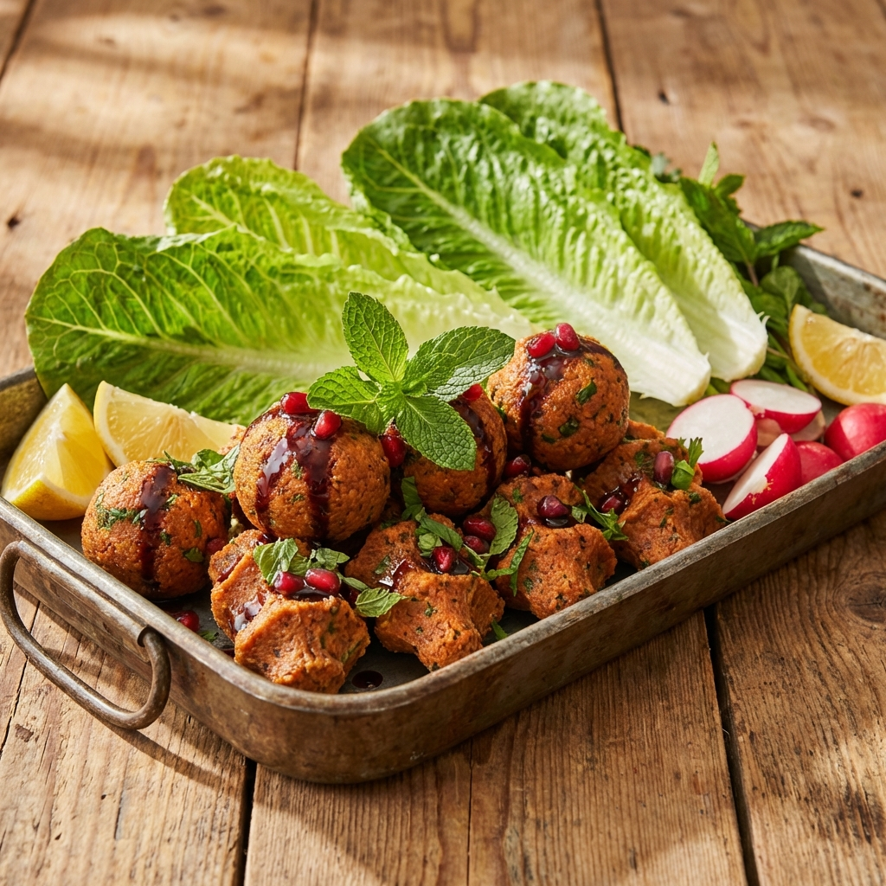

Etsiz Çiğköfte Tarifi

Şekil 1: Hazır servis edilmiş çiğköfte tabağı.
Malzemeler
- 500 gr ince bulgur (esmer)
- 2 yemek kaşığı isot (Urfa biberi)
- 1 adet kuru soğan
- 2 diş sarımsak
- 1 yemek kaşığı domates salçası
- 1 yemek kaşığı biber salçası
- Yarım çay bardağı nar ekşisi
- Taze soğan ve maydanoz
- Tuz, kimyon, karabiber
- Buz (yoğururken kullanmak için)
Yapılışı
- Bulguru tepsiye alın, üzerine salçaları ve baharatları ekleyin.
- Soğanı ve sarımsağı ince ince doğrayıp (veya rendeleyip) ekleyin.
- Malzemeleri birbirine yedirerek yavaş yavaş yoğurmaya başlayın.
- Kurudukça elinizi ıslatmak yerine buz ile yoğurmaya devam edin. Bu, bulgurun şişmesini engeller.
- Çiğköfte kıvamını alınca (yaklaşık 20-30 dakika), ince kıyılmış yeşillikleri ekleyin.
- Son bir kez daha karıştırıp sıkımlar (köfte şekli) yapın.
- Marul, limon ve lavaş ile servis yapın. AFİYET OLSUN!